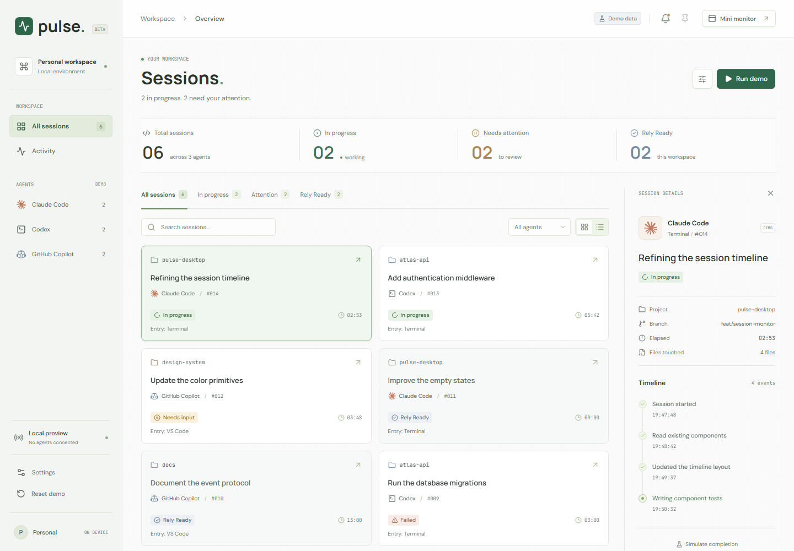
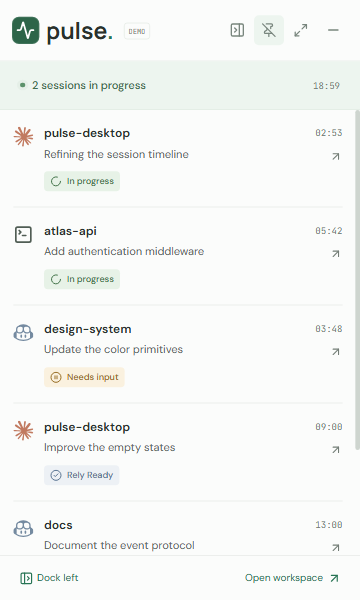

Track session status
Active requests are checked every 2 seconds. Follow activity, input requests and reply status in one place.
Local desktop tool Development preview
Keep your agent sessions in view.
Know when input is needed or a reply is ready, then
pick up where you left off.
Windows x64 · VS Code / Copilot and Claude Code snapshots · Session data stays local


Active requests are checked every 2 seconds. Follow activity, input requests and reply status in one place.
Brief notifications fade without taking keyboard focus. Pending reminders stay available in the bell inbox.
Open session details and the activity timeline in Pulse from the mini monitor or a reminder. Keep project context and recent updates together.
Pin the mini monitor, dock it on either side or collapse it to a narrow rail. The active window keeps a taskbar entry without briefly reopening the workspace.
Archive and restore sessions independently of reply status. Filter your collection without changing the original agent session.
Local monitoring and local reminders. Pulse does not automatically send messages, approve permissions or upload conversations.
Local VS Code / Copilot and independent Claude Code session snapshots are supported. Session actions open Pulse details, not external windows. Claude idle is not a finished reply; exact turn events, Codex, sorting and more management tools are planned.